The brief
This page teaches six papers as one story: measurement → representation → prediction → evaluation. Start at 0 even if you have some biology background — everything later leans on it. Read each section's opening idea, take the quizzes, and only open the advanced boxes if you want the machinery. The question the whole lecture turns on:
Mini-glossary
Show the 16 terms
| Term | Plain meaning |
|---|---|
| scRNA-seq | Single-cell RNA sequencing: measures the expression level of ~20,000 genes in one individual cell, as counts. |
| Gene expression | How active a gene is in a cell — how much of its protein recipe is being transcribed. |
| Perturbation | Deliberately interfering with a gene (CRISPR knock-out) or adding a drug, and observing what changes. |
| Latent space / embedding | A learned compressed vector representing something complex (a cell, a gene) so that similar things are close together. |
| Batch effect | Systematic technical differences between groups of cells processed separately (different day, machine, protocol) — noise that is not biology. |
| Fine-tuning vs zero-shot | Fine-tuning: continue training a pretrained model on your labeled task. Zero-shot: use it as-is, no task-specific training. |
| Foundation model | One large model pretrained once on lots of unlabeled data (like GPT), then adapted to many tasks. |
| DE genes | Differentially expressed genes: the ones whose expression actually changes between conditions — the interesting ones. |
| CRISPR | Gene-editing tool used to deliberately disable a specific gene in cells. |
| GO (Gene Ontology) | A curated public database describing what genes do and which pathways they belong to. |
| mRNA | The working copy of a gene's instruction, made when the cell uses that gene. What scRNA-seq counts. |
| Count matrix | The data object of the whole lecture: rows = genes, columns = cells, entries = how many copies were detected. |
| VAE (autoencoder) | Two neural networks back to back: one compresses the input to a short summary, the other reconstructs the input from that summary. Training forces the summary to be good. |
| Transformer / attention | The architecture behind ChatGPT; every piece of the input can look at every other piece, so meaning is computed in context. |
| HVG | Highly variable genes: the ~2000 genes that vary most across cells. A decades-old, model-free way to summarize a dataset. |
| L2 distance | Straight-line distance between a predicted and an observed expression profile — lower is better. |
What is a gene, and what does it mean to measure one?
How to read this page. Everything below is built from a handful of biological facts, explained here. No prior knowledge is assumed — if a term ever feels shaky, the glossary above is the fallback. Your goal is not to memorize details: it is to finish each section able to answer its questions.
- DNA is the instruction manual of the cell. It is a very long molecule made of four letters (A, C, G, T). A gene is a stretch of that manual — a single instruction, such as "build this protein" or "regulate that other gene". Humans have roughly 20,000 of them.
- Genes don't act directly; they are first copied. When a cell uses a gene, the cell makes a working copy of that gene's instruction out of a related molecule called mRNA. This copy step is called transcription. The copy is what gets read and turned into a protein.
- Gene expression = how many copies exist right now. A gene is "highly expressed" when the cell is currently making many mRNA copies of it; "not expressed" means zero copies. Expression is activity, not presence — every cell has the same genes, but different cells use different ones.
- That's what makes a cell a cell. A skin cell, an immune cell and a neuron carry the same 20,000 genes but run different subsets at different intensities. The full list of "which gene, how many copies" for one cell is called its expression profile — a list of 20,000 numbers.
- A perturbation is deliberately changing the manual. Break one gene (with a gene-editing tool like CRISPR) or add a drug, and some of those numbers shift — and shift other genes too, because genes influence each other. Observing which numbers move is how biologists work out what a gene does.
One picture to carry through the whole lecture: a cell is a point with 20,000 coordinates — one coordinate per gene, the value being how expressed that gene is. Similar cells are nearby points; a disease or a drug moves a cell to a different point. Every model in this lecture is a way of reading those points, compressing them, or predicting where a perturbation will move them. Next: how those numbers are actually measured.
What the data actually is — and why it's messy
Everything in this lecture stands on one measurement: single-cell RNA sequencing (scRNA-seq). It takes the expression profile from 0 and measures it for real: count, for each of the ~20,000 genes, how many mRNA copies are floating in one individual cell. The lab version works like this: a tissue is broken apart into single cells, each cell is captured alone in its own tiny compartment, its mRNA is tagged with a unique cell barcode (so later you can tell which copy came from which cell), and everything is read out together. The result is a genes × cells count matrix: each column is one cell, each row one gene, each entry a count. One caveat that matters later: a count of 50 means "50 copies detected", not "exactly 50 copies existed" — the measurement is a noisy window, not a perfect tally.
From that one object you can read out cell types (groups of nearby points), cell states (gradual shifts between them), which genes define each type, healthy-vs-diseased comparisons, and even how cells respond to treatment. One measurement, a whole analysis pipeline — which is exactly why the quality of the representation matters. But the measurement is ugly, and the five challenges below are what every model in this lecture is secretly designed around:
- Sparsity / dropout: the machine only samples a small part of each cell's mRNA, so most genes read 0 in most cells — even genes that are genuinely active. The zeros are mostly "not detected", not "not there".
- Sequencing depth: some cells get read out much more thoroughly than others — Cell X got ~1,242 total copies counted, Cell Y ~22,387. Same biology, different sampling effort, wildly different totals.
- Batch effects: cells processed on different days, machines or protocols come out systematically shifted — two identical cell types can look different purely because of how they were handled. Technical, not biological.
- Transcriptional noise: even two genuinely identical cells differ randomly — gene activity jitters by chance.
- Scale: datasets grow from hundreds to millions of cells — a computational burden.
Test yourself before moving on. Questions marked Menti were asked live during the session.
Which type(s) of omics data are covered in the papers?
What is RNA-seq and how is scRNA-seq measured?
What can we learn from scRNA-seq data? (the five uses in the slides)
What are key characteristics of single-cell RNA-seq data that scVI deals with?
scVI — deep generative modeling for single-cell transcriptomics
Lopez et al., Nature Methods 2018 · full .md
The idea, in one breath: each cell is a point with 20,000 noisy coordinates (0). scVI compresses each cell to 10 numbers that keep the biology and drop the technical junk — so that all downstream questions (cell types, comparisons, batch differences) can be asked on those 10 numbers instead of the raw mess. That compressed summary is called a latent representation, and every paper after this one builds on the concept.
How it works, without the statistics: scVI is a VAE (variational autoencoder) — two neural networks back to back. The first (encoder) reads a cell's 20,000 counts and outputs the 10-number summary. The second (decoder) tries to reconstruct the original counts from just those 10 numbers. Training forces the summary to be good enough to reconstruct the cell — that is what makes it capture the essentials. Two extra design choices are the paper's real contribution: the 10 numbers are forced to keep biology while explicitly setting aside the two technical factors from section 00 (library size — how thoroughly this cell was sampled — and batch effects — which machine/day processed it), and the reconstruction is judged with a statistical model that suits counts-with-many-zeros (a zero-inflated negative binomial, ZINB — the details box below unpacks this).
"Transcriptome measurements of individual cells reflect unexplored biological diversity, but are also affected by technical noise and bias. This raises the need to model and account for the resulting uncertainty in any downstream analysis."— Abstract
- Model: a VAE — an encoder network compresses each cell into a 10-dim latent vector, a decoder network reconstructs expression from it.
- Generative story: latent vector z + library size + batch → decoder → zero-inflated negative binomial (ZINB) distribution per gene. In plain terms: scRNA-seq counts are not bell-curve-like — they're sparse (most genes read as 0 in any given cell, the dropout problem), skewed, and over-dispersed. ZINB is a statistical distribution built for exactly that shape; a plain Gaussian would be the wrong tool.
- Key design choice: it explicitly models the two nuisance factors — technical artifacts, not biology — as separate variables: library size (how deeply a cell was sequenced; more reads ≠ more expression) and batch effects (cells processed on different days/machines/protocols shift systematically for technical reasons).
- One model, many tasks: batch correction, visualization, clustering, differential expression — all read out of the same latent space.
- Scope: this is representation, not intervention. Nothing here predicts what a cell will do under perturbation.
| Field | scVI |
|---|---|
| Task | Probabilistic representation of scRNA-seq |
| Data | scRNA-seq count matrices |
| Objective | ELBO / variational inference — the standard VAE training loss: reconstruct the data well while keeping the latent space smooth |
| Evaluation | Imputation (predict masked values), clustering vs. known cell-type annotations, batch removal, likelihood on held-out data |
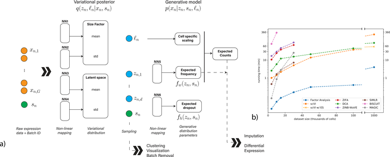
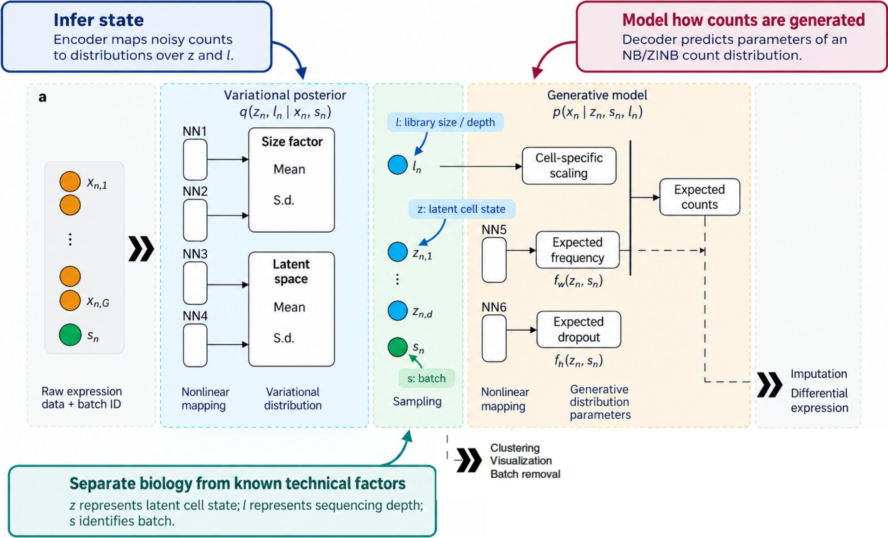
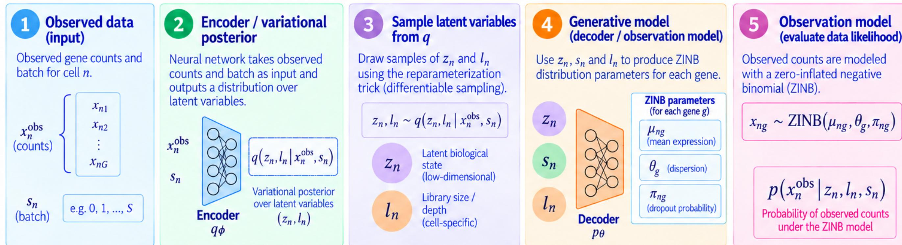
Advanced · the architecture block by block, and the training objective
The discussion session rebuilt scVI as five blocks. Read them as a pipeline:
- (a) Input: raw expression counts xn,1…xn,G plus the batch ID sn. The batch is an input, not noise to filter later.
- (b) Variational posterior q(zn, ln | xn, sn): four small NNs output the mean and s.d. of two distributions — the size factor l (sequencing depth) and the latent state z (d-dim biology).
- (c) Sampling: draw ln, zn from those distributions (reparameterization trick → differentiable).
- (d) Generative model p(xn | zn, sn, ln): NN5 predicts the expected frequency of each gene, NN6 the expected dropout, and ln does cell-specific scaling → expected counts under a ZINB.
- (e) Readouts: from z: clustering, visualization, batch removal; from expected counts: imputation, differential expression.
The design slogan: separate biology from known technical factors. z carries cell state, l carries depth, s carries batch — three explicit variables, so the latent space doesn't have to entangle them.
Training minimizes the ELBO per cell:
ELBOn = 𝔼q[ log p(xnobs | zn, ln, sn) ] − KL( q(zn, ln | xnobs, sn) ∥ p(zn, ln | sn) )
Two terms, two jobs: the likelihood term asks "how probable are the observed counts under the ZINB the decoder produced (μ mean, θ dispersion, π dropout)?" — reconstruction. The KL term keeps the posterior near the prior so the latent space stays smooth and comparable across cells — regularization. The lecture's own applications/advantages/limitations summary:
| From the lecture | |
|---|---|
| Applications | Latent representation (dim. reduction, clustering) · data integration with batch covariates · denoised expression & DE testing · large atlases |
| Advantages | Count-aware (probabilistic, not Gaussian) · uncertainty-aware (posterior per cell) · separates state/depth/batch · scalable (amortized inference, mini-batches) |
| Limitations | Latent ≠ interpretable biology · depends on distributional assumptions · batch correction can fail or erase real signal when batch ∩ biology are confounded · not causal — doesn't predict unseen perturbations |
Which architecture best describes the core of scVI? And what are the main components and their roles?
What is the main training objective in scVI?
What are advantages and limitations of scVI?
Why does scVI use a zero-inflated negative binomial likelihood instead of a Gaussian?
scGPT — a foundation model for single-cell multi-omics
Cui et al., Nature Methods 2024 · full .md
The idea, in one breath: scVI compresses cells, but trains a separate model per dataset, from scratch each time. scGPT asks the question GPT asked about text — why not train one big model once, on enormous amounts of data, and reuse it everywhere? Its bet: treat genes as words and cells as sentences, pretrain on 33 million cells, and let everyone reuse the result instead of retraining from scratch.
The machinery behind it: a transformer is the architecture behind ChatGPT. Its one key trick, self-attention, lets every piece of the input look at every other piece and decide what is relevant to it — so a word (or gene) is understood in context. Pretraining means training this model on a huge corpus with a self-supervised objective — no labels needed, just hide some pieces and ask the model to predict them from the rest. scGPT applies exactly that recipe to cells.
"Drawing parallels between linguistic constructs and cellular biology — where texts comprise words, similarly, cells are defined by genes — our study probes the applicability of foundation models to advance cellular biology and genetics research."— Abstract
"…the construction of a foundation model for single-cell biology, scGPT, which is based on generative pre-trained transformer across a repository of over 33 million cells."— Abstract
- Scale jump: from task-specific VAE (scVI) to a foundation model — the same idea as GPT: one large model pretrained once on lots of unlabeled data, then adapted to many tasks instead of training from scratch each time.
- Claimed transfer: cell-type annotation, multi-batch integration, multi-omic integration, genetic perturbation prediction, gene network inference — via fine-tuning.
- The key word is "through further adaptation": performance claims are largely fine-tuned, not zero-shot. Hold that thought for paper 03.
- Assumption to interrogate: does gene–"token" analogy hold? Genes don't appear in a sequence order the way words do; attention over genes is an assumption, not a fact.
| Field | scGPT |
|---|---|
| Task | Pretrained general representation, many downstream tasks |
| Representation | Gene as token, transformer, value + gene embeddings |
| Objective | Generative pretraining (masked/next-gene prediction style) |
| Evaluation | Fine-tuned benchmark performance per task |
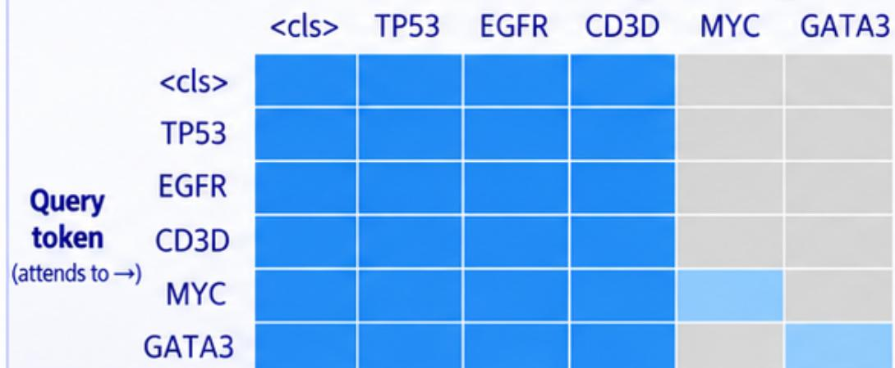
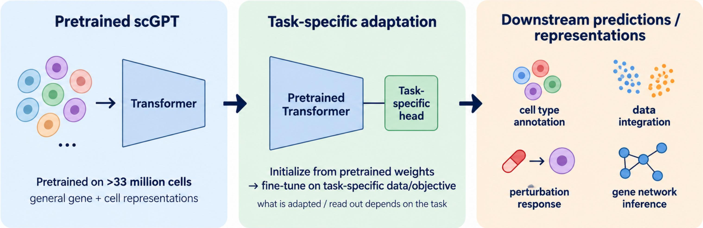
Why it's genuinely hard — two mismatches with language:
- Non-sequential: text tokens have strict order that dictates meaning; a transcriptome is a bag-of-genes expressed simultaneously, with no inherent order.
- Quantitative: a word token is present or absent (categorical); every gene token carries a continuous abundance value.
scGPT's answer — tokenization. Each gene becomes a token made of three combined embeddings:
hi = embg(gi) gene identity + embx(xi) expression value, discretized into a bin + embc(ci) optional condition: batch, perturbation, modality
And a special cell token (<cls>) summarizes the whole cell. The pretraining objective is masked-value prediction, not next-word prediction: hide the expression of some target genes (MYC, GATA3), keep their gene IDs visible, and train the transformer to predict the masked values from the cell token + the known genes. The generative attention mask enforces this: known genes attend to everything; each target attends to the cell token, all known genes, and itself only — never to other masked targets. That forces context to come from genuine co-expression within the cell.
What you get out: contextual representations. The same gene gets different embeddings in different cells — hTP53(T cell) ≠ hTP53(cancer cell) — because attention mixes information from everything else expressed. Rule of thumb from the lecture: cell-level question → use hcell (annotation, clustering, integration); gene-level question → use hgene (how does TP53 behave in this cell?). Downstream, the same pretrained weights are adapted with a task-specific head and fine-tuned: cell annotation, data integration, perturbation response, gene network inference. Pretrain once at scale → adapt to many tasks.
Why use transformer-based foundation models for scRNA-seq data?
How can we adapt Transformers to scRNA-seq? What makes it non-trivial?
How is a cell converted into tokens in scGPT?
How can scGPT learn context between genes?
After pretraining, what representations can we extract — and which for which question?
How is the pretrained scGPT adapted for downstream tasks?
What is the central analogy scGPT relies on, and what is its weakest point?
Zero-shot evaluation reveals limitations of single-cell foundation models
Kedzierska et al., Genome Biology 2025 · full .md
Zero-shot means using a model directly after pretraining, with no fine-tuning — no task-specific training on labeled examples. Why care? Because in a real discovery experiment you often have no labels to fine-tune on. The stress test for paper 02: evaluate scGPT and Geneformer (another single-cell foundation model, pretrained by masking gene values — the BERT recipe instead of GPT) zero-shot and see if the representations are actually good.
"Our evaluation of the zero-shot performance of Geneformer and scGPT suggests that, in some cases, these models may face reliability challenges and could be outperformed by simpler methods."— Abstract
"…both Geneformer and scGPT underperform simpler methods… zero-shot evaluation of these models exposes vulnerabilities that are not evident if evaluated with fine-tuning alone."— Discussion
- Headline result: in cell-type clustering, HVG (highly variable genes) — the decades-old baseline of just picking the ~2000 genes with the most variation across cells and clustering on those, no model at all — outperformed Geneformer and scGPT across all metrics.
- Awkward detail: some evaluation datasets were in the pretraining data (Tabula Sapiens, Immune for scGPT) — and the models still didn't consistently win.
- Scale doesn't save you: "larger pretraining datasets do not always increase the performance of scGPT."
- Lesson for the lecture: evaluation protocol is a design choice that determines the conclusion. Fine-tuned benchmarks ≠ generalizable representations.
| Field | Zero-shot eval |
|---|---|
| Task | Evaluation / benchmarking, not a new model |
| Setting | No fine-tuning: embeddings used as-is |
| Baselines | HVG, scVI, Harmony (a classic batch-correction method) |
| Claim tested | "Strong capabilities for generalizing to unseen datasets" |
How a good representation is judged — two axes, and it must score on both: biological conservation (do different cell types come out clearly separated?) and batch integration (do cells processed on different days get mixed as they should, instead of clustering by machine?). The zero-shot comparison on five datasets:
How to read the tables: higher is better on both. Each column is a dataset; each row a method. Watch the foundation models (Geneformer, scGPT) against the simple ones (HVG, Harmony, scVI).
| AvgBIO (biology) | Pancreas 16k | PBMC 95k | Tabula Sapiens 483k | PBMC 12k | Immune 330k |
|---|---|---|---|---|---|
| HVG | 0.68 | 0.53 | 0.45 | 0.63 | 0.53 |
| Harmony | 0.82 | 0.63 | 0.39 | 0.72 | 0.57 |
| scVI | 0.81 | 0.67 | 0.57 | 0.74 | 0.53 |
| Geneformer | 0.26 | 0.52 | 0.30 | 0.59 | 0.36 |
| scGPT human | 0.44 | 0.55 | 0.43 | 0.78 | 0.51 |
| Avg batch (integration) | Pancreas | PBMC 95k | Tabula Sapiens | PBMC 12k | Immune |
|---|---|---|---|---|---|
| HVG | 0.77 | 0.58 | 0.47 | 0.65 | 0.51 |
| Harmony | 0.79 | 0.77 | 0.41 | 0.89 | 0.74 |
| scVI | 0.86 | 0.73 | 0.61 | 0.85 | 0.43 |
| Geneformer | 0.30 | 0.41 | 0.45 | 0.49 | 0.38 |
| scGPT human | 0.43 | 0.47 | 0.45 | 0.49 | 0.59 |
Read it plainly: scVI and Harmony dominate; Geneformer is often the worst; scGPT wins once (PBMC 12k biology). The lecture's fine-tuning vs zero-shot distinction frames why: full fine-tuning tests whether pretraining is a useful starting point; zero-shot tests whether the representation itself transfers. Strong transfer should hold on genuinely new data and against strong baselines. The outlook slide: foundation models remain promising, but scale is not enough — we must test what biology is actually learned, keep strong simple baselines, and treat benchmarking of zero-shot transfer, fine-tuning and robustness as central, not optional.
Which result would provide the strongest evidence that scGPT has learned a transferable foundation-model representation?
What should a good single-cell embedding preserve, and what should it be invariant to? And what did the zero-shot evaluation find?
Why is zero-shot evaluation the "critical setting" for foundation models, per this paper?
CPA — compositional perturbation autoencoder
Lotfollahi et al., Molecular Systems Biology 2023 · full .md
The shift from representing states to predicting responses. In silico means predicted by computer rather than measured in the lab. CPA conditions a latent space on perturbation, dose, and covariates — so you can move a cell in silico to a condition never measured.
Why this matters practically: you can't test all drug combinations in the lab. With 100 drugs you have ~5,000 pairs; with perturb-seq-style experiments (measuring single cells after a genetic perturbation) the combinatorial space explodes. If a model can predict what an untested combination does, you only test the promising ones.
"CPA learns to in silico predict transcriptional perturbation response at the single-cell level for unseen dosages, cell types, time points, and species."— Abstract
"…an exhaustive exploration of the combinatorial perturbation space is experimentally unfeasible. Therefore, computational methods are needed to predict, interpret, and prioritize perturbations."— Abstract
- Architecture: autoencoder with a disentangled latent space — the latent vector is split into separate pieces, one per factor: a piece for the perturbation, one for the dose, one for the cell type. "Disentangled" = each piece controls one factor independently, so you can swap the perturbation piece while keeping the rest.
- Compositionality: because each perturbation is a direction (a delta) in latent space, two perturbations can be combined by adding their directions — the core trick for predicting unseen combinations.
- Flagship number: imputed 5,329 missing combinations (97.6% of all possibilities) in a Perturb-seq experiment (a technology that reads out gene expression cell-by-cell after CRISPR perturbations) in silico.
- Extra flexibility: can ingest chemical representations of drugs → predict responses to completely unseen drugs.
- Assumption to interrogate: additivity of effects in latent space. Real biology has epistasis — interactions where the combined effect is not the sum of the parts: buffering (one perturbation cancels the other) and synergy (together they do far more than the sum). See paper 06.
| Field | CPA |
|---|---|
| Task | Predict perturbation response (drug + genetic) |
| Representation | Disentangled latent: perturbation, dose, covariates |
| Generalization | Unseen doses, combinations, cell types, unseen drugs via chemistry |
| Limitation | Needs the perturbation identity seen in training for genetic combos |
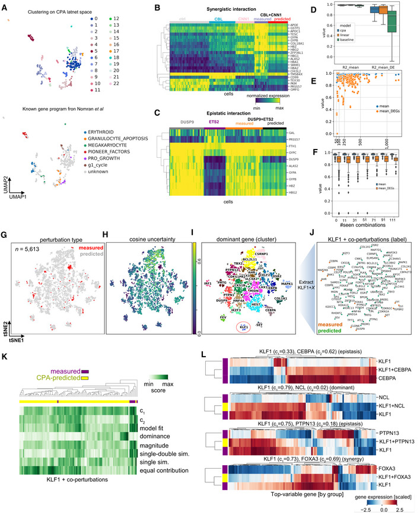
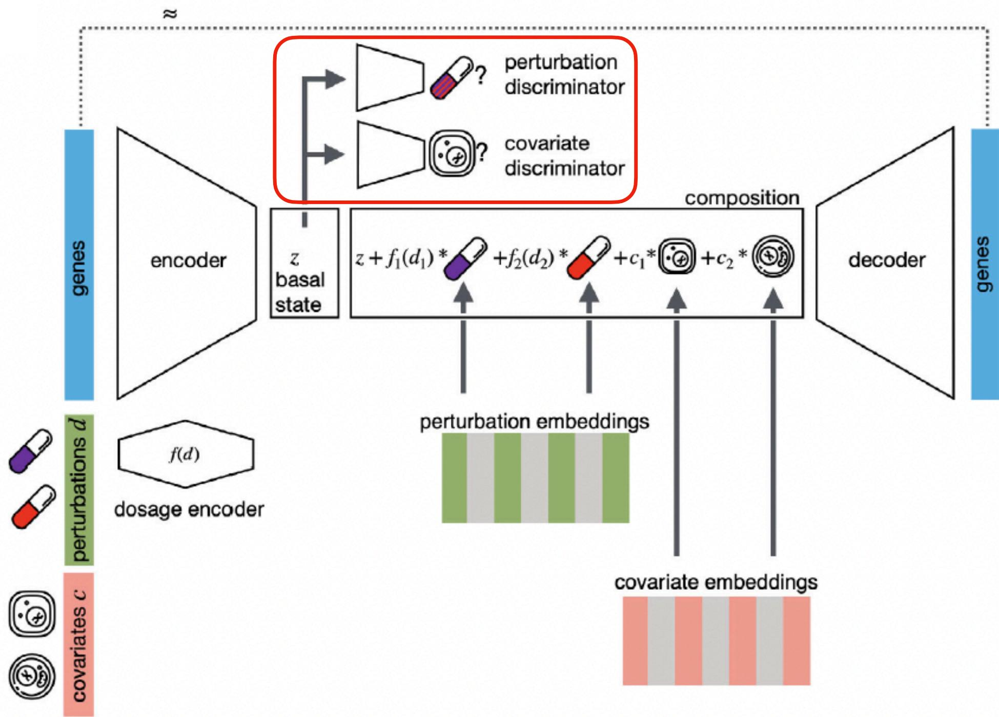
Why this is harder than it looks. Beyond the combinatorial explosion, there is a fundamental obstacle: scRNA-seq is destructive. Measuring a cell destroys it — the cell is broken open during measurement, so the same cell can never be observed before and after treatment; control and treated groups contain different cells. Every perturbation-response question is therefore inherently counterfactual: what would this cell have looked like under another treatment? No experiment can answer that directly — only a model can.
What determines the response — and how CPA encodes each factor separately:
| Factor | CPA component |
|---|---|
| Baseline cellular state | Basal latent state z (from the encoder) |
| Perturbation identity | Perturbation embedding (the effect of the drug / knock-out) |
| Dose | Dose embedding f(d) — scales the perturbation's strength |
| Cell type / context / covariates | Covariate embeddings c |
| Combinations | Sum of perturbation embeddings in the composition block |
The composed state z + f₁(d₁) + f₂(d₂) + c₁ + … is decoded back to genes. The trick that keeps it honest is adversarial disentanglement — a cat-and-mouse game inside the model. A small network (the discriminator) tries to guess which treatment a cell got by looking only at the basal state z; the encoder is trained to make it fail. If the discriminator can't read treatment out of z, then all treatment information must live in the separate perturbation embeddings — which is exactly what makes swapping them in silico valid. And the generalization boundary, verbatim from the lecture: can — new combinations of individually-seen drugs, known drugs in new cellular contexts, unseen doses; cannot — completely unseen perturbations, never-seen cell types, or synergy for combinations absent from training. That boundary is exactly where GEARS picks up.
Why predict perturbation responses from single-cell data — and why is it difficult?
What determines perturbation response, and how does CPA encode it?
How does CPA prevent the basal state from encoding treatment?
What can CPA generalize to — and what not?
What makes CPA's perturbation prediction "compositional", and what does it buy?
GEARS — predicting responses of novel multigene perturbations
Roohani et al., Nature Biotechnology 2024 · full .md
The other answer to the extrapolation problem: instead of pure data scale, inject prior biological knowledge as an inductive bias — an assumption built into the model's structure that constrains what it can learn, so it generalizes from less data. GEARS encodes two curated databases as graphs and processes them with a GNN (graph neural network) — a network that passes information along the edges of a graph, so connected nodes influence each other. Goal: predict perturbations of genes never perturbed in training.
"GEARS is uniquely able to predict the outcomes of perturbation sets that involve one or more genes for which there are no experimental perturbation data."— Results
"This relies on two biological intuitions: (i) genes that share similar expression patterns should likely respond similarly to external perturbations, and (ii) genes that are involved in similar pathways should impact the expression of similar genes after perturbation."— Results
- Architecture: separate gene + perturbation embeddings (learned vectors representing each gene and each "breaking gene X" action) combined through a GNN over the knowledge graphs; predicts per-gene post-perturbation state.
- Two intuitions → two graphs: a co-expression graph (genes linked if they are active together across cells — genes that behave alike likely respond alike) and a Gene Ontology (GO) graph (a curated database of gene functions and pathways — genes in the same pathway likely affect the same targets).
- Numbers: 30–50% MSE improvement over baselines on the top-20 DE genes (DE = differentially expressed: the genes that change most under the perturbation — the ones that matter; most genes barely change); >2× Pearson correlation (a similarity score between predicted and true expression profiles) on all genes; up to 53% improvement when both genes of a combination are unseen.
- Generalization classes: 0, 1, or 2 unseen genes in a two-gene perturbation — a clean taxonomy of how hard the extrapolation is.
- Scope note: here the perturbation is a gene knock-out/knock-down, not a drug. The perturbation embedding is defined because genes have known relationships.
| Field | GEARS |
|---|---|
| Task | Transcriptional outcome of single/multi-gene perturbation |
| Prior knowledge | Co-expression graph + Gene Ontology graph (GNN) |
| Generalization | Unseen genes (1 or 2 of 2), new regions of perturbation space |
| Evaluation | MSE top-20 DE, Pearson, DE enrichment, interaction subtypes |
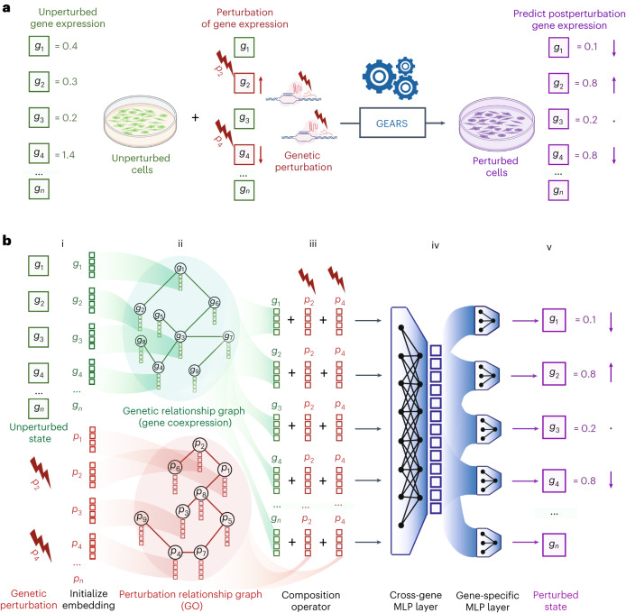
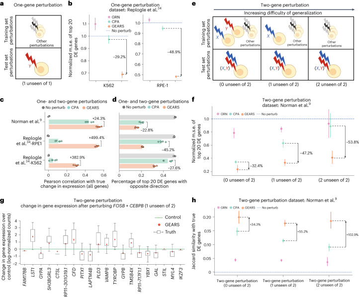
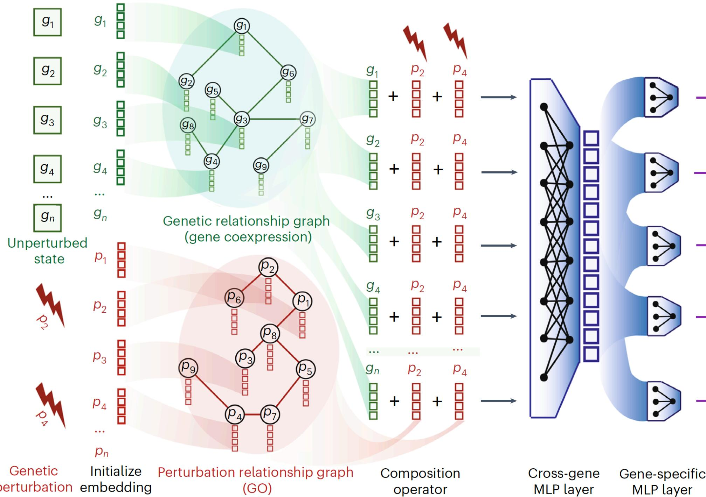
What "using a map" means concretely: two graphs. The co-expression graph links genes that are active together across cells — measured from the data itself. Lecture example neighborhoods: ribosomal genes (ACTB, GAPDH, RPS3…), interferon-response genes (STAT1, IFIT1, OAS1, MX1, ISG15), cell-cycle genes (MKI67, PCNA, CDK1, TOP2A, TYMS). The GO graph links genes with the same documented function, from the Gene Ontology database — e.g. STAT1/IFIT1/ISG15/MX1 all carry "interferon signaling"; EGFR/GRB2/RAF1/MAPK1 share "MAPK cascade". Two graphs, two notions of similarity: observed (co-expression) vs functional (GO).
Advanced · the full pipeline in five steps
The architecture, as built up step by step in the session:
- 1 · Initialize: each gene gets two learnable embeddings — xugene (the gene) and xupert (perturbing it).
- 2 · Graph-informed: two GNNs propagate over the two graphs: hugene = GNNgene(xugene, Ggene), hupert = GNNpert(xupert, Gpert). This is the step that lets unseen genes borrow embeddings from seen neighbors.
- 3 · Compose: the applied perturbations are summed into one representation hP = MLPc(Σ hppert), then combined with every gene: hupost = MLPpp(hugene + hP). Same hP for all genes.
- 4 · Cross-gene effects: a preliminary per-gene effect zu = wuThupost + bu is summarized transcriptome-wide: hcg = MLPcg(z₁…zK) — capturing secondary effects.
- 5 · Predict: gene-specific decoder combines local + cross-gene info: ẑu = Decoderu(zu ∥ hcg), and the final prediction is control expression plus predicted effect: ĝu = gu,ctrl + ẑu.
Training: input = control profile + perturbation set; target = measured post-perturbation expression; loss = predicted vs measured, with an autofocus direction-aware loss that upweights genes with strong perturbation-induced changes — because most genes barely change, plain MSE underweights exactly the genes that matter. Generalization boundary: can — unseen genes, new combinations including unseen genes; cannot / not designed for — new cell types or cross-cell-type transfer, and combination prediction still benefits from combinatorial training data. Performance is only as good as the prior graphs are relevant.
What allows GEARS to represent a perturbation never seen during training? (i.e. what prior knowledge does it use?)
How is GEARS trained?
What can GEARS generalize to — and what are its limitations?
GEARS can predict perturbations of genes never perturbed in training. What enables this?
Deep-learning perturbation prediction does not yet outperform simple linear baselines
Ahlmann-Eltze, Huber & Anders, Nature Methods 2025 · full .md
Vocabulary for the figures: L2 distance = straight-line distance between predicted and observed expression vectors (lower is better). LFC (log fold-change) = how much a gene's expression changed vs. control, on a log scale. Beeswarm plot = each dot is one perturbation, stacked by its error; the red line is the mean. Pseudobulk = averaging single-cell counts per condition to get one profile per perturbation.
The reality check — and the paper most likely to fuel the discussion round. Run 5 foundation models + 2 deep learning models against "no change", "additive", and a simple linear model. Result: nothing beats them consistently.
"Here we compared five foundation models and two other deep learning models against deliberately simple baselines for predicting transcriptome changes after single or double perturbations. None outperformed the baselines, which highlights the importance of critical benchmarking in directing and evaluating method development."— Abstract
"None of the models was better than the 'no change' baseline."— Results (double perturbations)
"As our deliberately simple baselines are incapable of representing realistic biological complexity, yet were not outperformed by the foundation models, we conclude that the latter's goal of providing…"— Summary (cut short deliberately: find the ending)
- The two baselines: "no change" (always predict the control cells' expression — assume the perturbation did nothing) and "additive" (for a double perturbation A+B, predict the sum of the individual log fold-changes — the change each perturbation causes alone, added up on the log scale). Neither uses any double-perturbation data.
- Devastating detail: for most genes, predictions of scGPT, UCE and scBERT did not vary across perturbations — they had learned to predict ≈ control.
- Synergy is rare and mostly wrong: DL models rarely predicted synergistic interactions, and "it was even rarer that those predictions were correct."
- Embedding recycling: a linear model with pretrained embeddings (from scGPT/scFoundation/GEARS) performed as well or better than the full models. A linear model here means: predicted expression = matrix of gene embeddings × matrix of perturbation embeddings — no neural network, just one fitted weight matrix. The representations have some value; the fancy decoders don't add much.
- What did work: a linear model with perturbation embeddings pretrained on perturbation data (cross cell-line). Pretraining on the atlas gave only "a small benefit over random embeddings."
| Field | Baselines paper |
|---|---|
| Task | Critical benchmarking of 7 DL models |
| Data | Norman (doubles), Adamson, Replogle K562/RPE1 (singles) |
| Baselines | No change, additive LFC, linear model (G·W·P) |
| Verdict | No DL model consistently beats simple baselines |
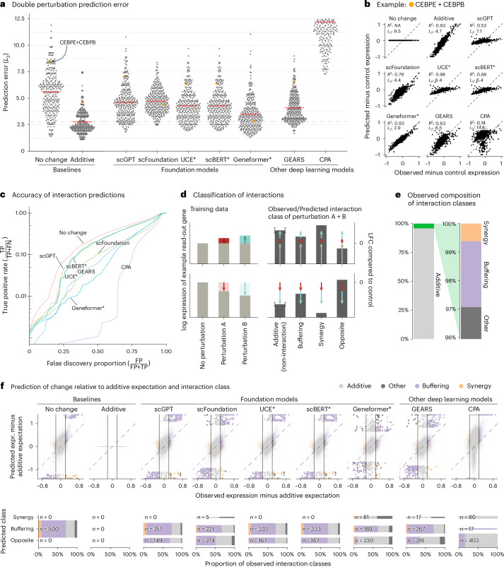
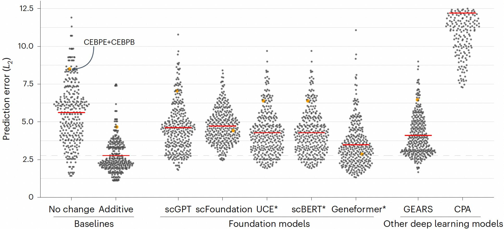
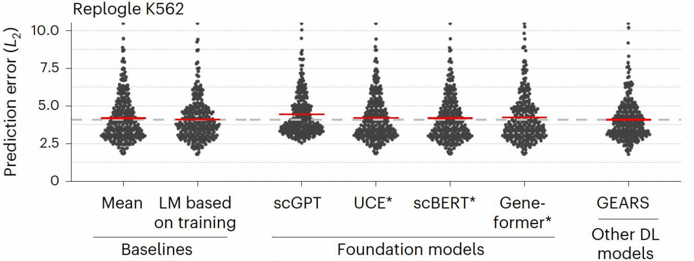
The evaluation as two tasks, each with its own baseline — "different generalisation claims require different baselines":
| Task | Setup | Baseline | Question tested |
|---|---|---|---|
| Unseen combinations | Train on singles + some doubles; test on held-out doubles | Additive: ŷA+B = yA + yB − y∅ | Can the model predict non-additive structure beyond what additivity explains? |
| Unseen perturbations | Hold out entire single-gene perturbations | Mean: predict the average training profile; Linear: Ŷ = G·W·PT + b (gene embeddings × perturbation embeddings, one linear map) | Can the model extrapolate to a new perturbation identity better than simple structured predictors? |
Results in one line each. Doubles: additive (median L2 ≈ 2.5) beats every foundation model (≈ 3.5–4.5), GEARS (≈ 4.0) and CPA (≈ 11.5); "no change" (≈ 5.5) is worse than additive but still ahead of most DL models. Unseen singles (Replogle K562/RPE1): scGPT, UCE, scBERT, Geneformer and GEARS cluster near the plain mean baseline; the linear model matches or beats the best of them. The lecture's five rules for benchmarking perturbation models:
- Strong simple baselines — does complexity add value beyond mean/linear/additive structure? (Ahlmann-Eltze 2025)
- Match metric to the biological question — good whole-transcriptome prediction ≠ good perturbation-specific prediction (Systema, Nat Biotech 2025).
- Check the metric is informative — it must distinguish meaningful predictions from null ones (Miller 2025).
- Benchmark the actual generalization claim — be explicit about what's held out: perturbations, combinations, cell types, contexts, patients (Saez-Rodriguez 2026).
- Robustness across datasets and splits — conclusions shouldn't depend on one favorable split.
And the takeaways that close the lecture: different models solve different generalization problems (representing observed states ≠ recombining known perturbations ≠ predicting unseen ones); simple biological structure goes a long way; complex models earn their keep only when they capture what simple models miss (non-additivity, context, transferable relationships); more complexity demands more data — many cells ≠ many independent perturbation examples; and biological priors help extrapolation, if the prior is informative.
How can we tell whether a complex perturbation model really learns something beyond simple patterns?
What is the best simple baseline for predicting an unseen combination of two perturbations?
What is the best simple baseline for predicting a completely unseen perturbation?
How should we benchmark perturbation models? (the five rules from the closing slides)
Which result most strongly suggests the foundation models learned statistical regularities rather than biology?
The thread: what each paper left open, and what the next one answers
The lecture is not six unrelated papers — it is one conversation. Read it as a chain of questions, each one raised by the previous answer:
- The data is a mess. 20,000 noisy coordinates per cell (0). → scVI: compress each cell to a clean 10-number summary that separates biology from technique.
- But scVI starts from scratch every time. New dataset, new model, new training. → scGPT: train one giant model once on 33M cells; reuse it everywhere. Genes as words, cells as sentences.
- Does the giant model actually understand cells? Its headline results all involve fine-tuning. → Zero-shot eval: use it as-is, no training — and the decades-old simple baseline beats it. Pretraining ≠ understanding.
- So stop describing cells; start predicting what happens to them. But measurement destroys the cell — you can never see the same cell twice. → CPA: a model that answers the counterfactual, keeping state, drug and dose in separate slots so you can swap the drug in silico.
- CPA can only recombine drugs it has seen. What about a gene never perturbed in any experiment? → GEARS: use the map of known biology (co-expression + GO graphs) to infer what perturbing an unseen gene would do.
- And finally — does any of this fancy machinery actually work? → Baselines paper: no. Predict "nothing changed" and you match or beat every deep model. The field was measuring the wrong thing.
What to keep, if you keep only five things: ① a cell is a point with 20,000 coordinates, and the measurement of it is noisy; ② compressing a cell to a good summary (scVI) is not the same as predicting what will change it; ③ "strong after fine-tuning" and "strong as-is" are different claims, and as-is the big models lose to simple baselines; ④ perturbation prediction is counterfactual — models, not measurements, must answer it; ⑤ any complexity claim must be tested against the simple baseline that matches exactly what was held out.
Zooming out, the six papers are positions on axes, not islands. Where each sits:
Measurement vs. state
scVI exists because measurements are noisy and partial. Batch effects are technical, not biological — a model must separate them or it learns the instrument.
Representation ≠ prediction
A latent space good for clustering (scVI, scGPT zero-shot) need not contain the information needed to predict an intervention's effect. Paper 03 shows the first failing; paper 06 the second.
Generate vs. predict
Reconstructing plausible measurements (scVI sampling, scGPT generation) is a weaker claim than predicting an unobserved biological response. They need different validation.
Interpolation vs. extrapolation
Always ask what was held out: new cells? new dose? new combination? new gene? Each step right on axis 4 is a stronger claim and needs stronger evidence.
Paper 06's linear model with pretrained embeddings matched the full deep learning models. What does this imply?